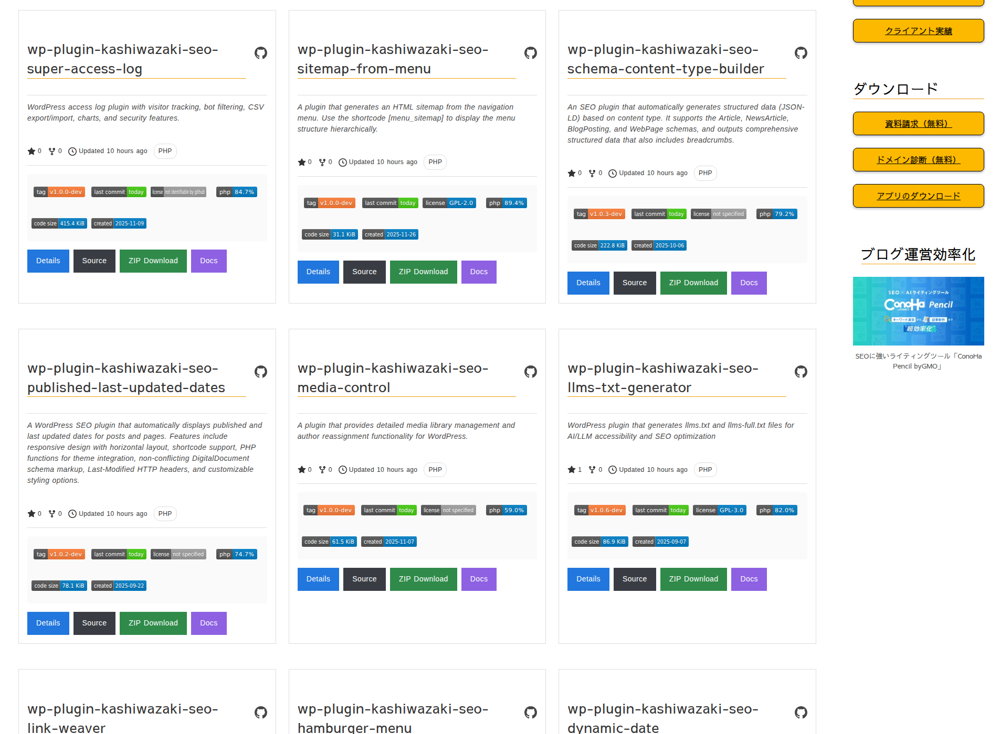

ショートコード リファレンス
3種類のショートコードでGitHubリポジトリを柔軟に表示できます。属性の組み合わせでレイアウトや取得対象を自由に調整可能です。

図: [kashiwazaki_github_user_repos] でTsuyoshiKashiwazaki のリポジトリを一覧表示した例。各カードには Details / Source / ZIP Download / Docs（GitHub Pages有効時のみ）の4つのアクションボタンが並びます。
ショートコード一覧
[kashiwazaki_github_repo] — 単一リポジトリ表示
1つのリポジトリのカードを表示します。
| 属性 | 型 | デフォルト | 必須 | 説明 |
|---|---|---|---|---|
| repo | string | （なし） | YES | リポジトリ名（例: my-plugin） |
| username | string | kgrd_default_username オプション値 | NO | GitHubユーザー名（省略時は管理画面の既定値） |
| style | string | card |
NO | 表示スタイル: card / minimal / badges-only |
| license | string | （空） | NO | ライセンス表示の手動上書き |
[kashiwazaki_github_repo repo="wp-plugin-kashiwazaki-seo-breadcrumbs"]
[kashiwazaki_github_repo repo="my-tool" username="octocat" style="minimal"][kashiwazaki_github_repos] — 複数指定表示
カンマ区切りで複数のリポジトリを指定してグリッド表示します。
| 属性 | 型 | デフォルト | 必須 | 説明 |
|---|---|---|---|---|
| repos | string | （なし） | YES | カンマ区切りのリポジトリ名（例: repo1,repo2,repo3） |
| username | string | 既定ユーザー名 | NO | 対象のGitHubユーザー名 |
| columns | integer | 2 | NO | グリッド列数（1〜4） |
[kashiwazaki_github_repos repos="plugin-a,plugin-b,plugin-c" columns="3"][kashiwazaki_github_user_repos] — ユーザー全リポジトリ
指定ユーザーの全リポジトリを自動取得してグリッド表示します。
| 属性 | 型 | デフォルト | 必須 | 説明 |
|---|---|---|---|---|
| username | string | 既定ユーザー名 | NO | 対象のGitHubユーザー名 |
| columns | integer | 2 | NO | グリッド列数（1〜4） |
| limit | integer | 30 | NO | 取得件数上限（1〜100） |
| sort | string | updated |
NO | ソート: created / updated / pushed / full_name |
| direction | string | desc |
NO | 昇順/降順: asc / desc |
| type | string | owner |
NO | 取得タイプ: all / owner / public / private / member |
| exclude_forks | boolean | false | NO | フォークしたリポジトリを除外 |
[kashiwazaki_github_user_repos username="TsuyoshiKashiwazaki" columns="3" limit="100" exclude_forks="true"]表示スタイル
すべてのショートコードで共通して使える3つの表示スタイルを用意しています。用途に応じて使い分けてください。
Card
フルカード表示。タイトル・説明・バッジ・統計・4ボタンをすべて表示する標準スタイルです。デフォルトで使用されます。
Minimal
タイトルと説明だけの軽量表示。本文中にさりげなくリポジトリを紹介したいときに最適です。
Badges-only
shields.ioバッジのみの最小表示。README的にバッジだけを並べたいときに使用します。
ヒント
ショートコードの出力はトランジェントキャッシュ（既定6時間）に保存されます。GitHub APIへのアクセスは初回のみ、2回目以降はキャッシュから返されるためページ表示が高速です。
補足
各ショートコードは表示時に自動で「追跡対象リポジトリ」に登録されます。この登録は詳細ページ機能（permalink-based detail pages）とCron自動更新で使用されます。